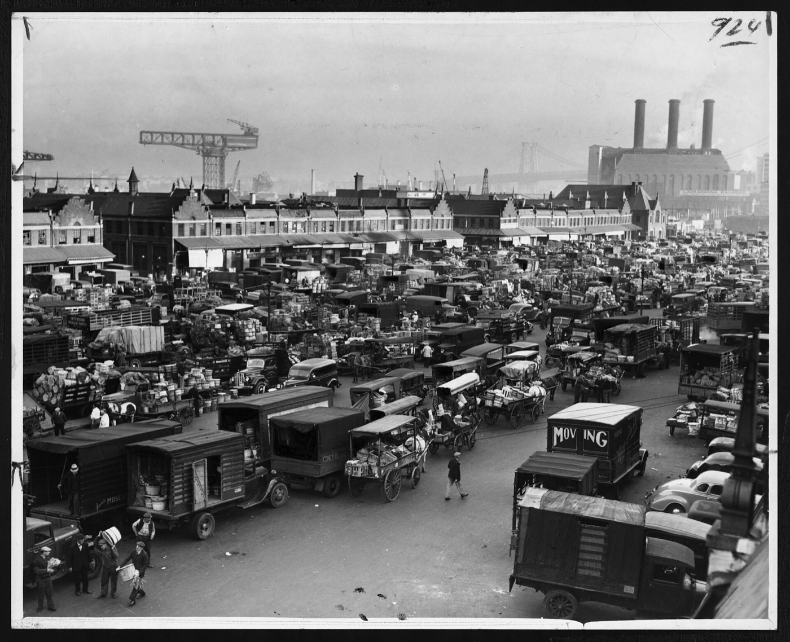
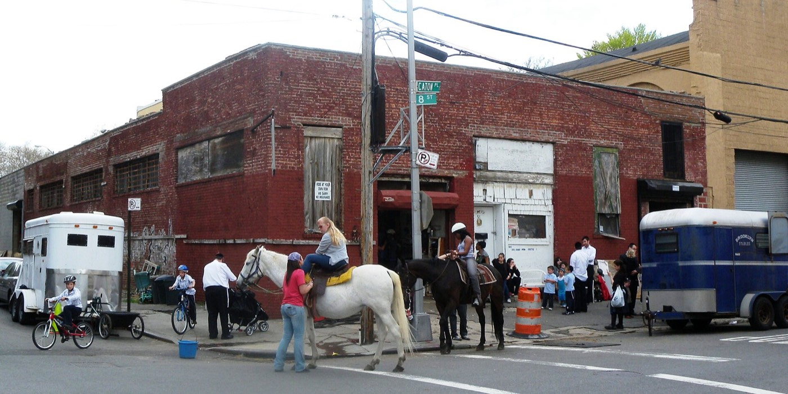

Heritage
Prospect Park was designed with a bridle path, and Brooklyn once held horse parades hundreds strong. The Helping Hoof Initiative carries that tradition forward.
- 1917
Prospect Park Stable
Prospect Park Stable is founded. It’s the name the stable would get back a century later.
- 1935
A parade hundreds strong
A parade sponsored by the Brooklyn Daily Eagle and the ASPCA draws 252 horses, some 500 dogs, and a goat pulling a cart.
- 2018
A name restored
The former Kensington Stables changes hands and gets back its 1917 name, Prospect Park Stable.
- 2019
Back in the park
The Equine Rally revives Brooklyn’s horse parade, compost from the stable reaches Red Hook’s gardens, and the GallopNYC therapeutic riding partnership begins.
- 2020
Neighbors & new riders
Horse-drawn deliveries reach Red Hook neighbors during the pandemic, and young riders fill the summer immersion program.
- Today
Helping Hoof Initiative
Helping Hoof, Inc., a registered 501(c)(3) nonprofit, carries the mission forward alongside Be•Brooklyn Equine.

